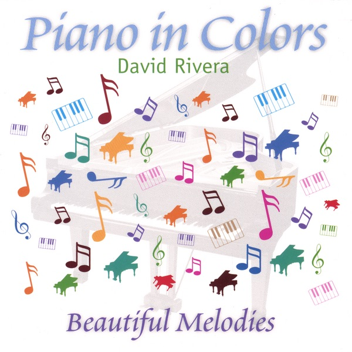

Piano In Colors
2007 · solo piano
Fifteen pieces named for colors. Blue to scarlet, mauve to gray, then cyan. Same hands, a wider palette.
I’m David Rivera. American neoclassical composer. Seven piano solo and ambient albums that fuse minimalism and electronica. The music is piano at heart. Subtle melodies for overlooked moments, sometimes with ethereal instruments, vocals, or synths. A place to slow down and take the time to listen.
I’m back at the instrument. Enjoy this palette for now. New music is on the way, so keep an ear out.
This page is only this album. If you want the album, press listen above.
The pieces
- Blue3:44
- Scarlet3:48
- Purple3:14
- Mauve3:34
- Yellow3:23
- Red3:44
- Magenta1:22
- Azure4:30
- Pink3:54
- Green3:02
- Orange4:22
- Sepia3:50
- Aqua4:33
- Gray4:10
- Cyan2:31
The other albums
- Melodic Subtlety – Solo Piano (2006) · minimalist piano
- Tantalizing Proof (2009) · quiet, insistent piano
- Clean Calm Piano (2010) · intimate piano
- Where In The World Is Diane (2012) · travel-inspired piano
- Smitten with the Muses (2014) · beguiling piano
- Piano Reveries and Phantasies (2015) · contemplative works
- Lackadaisical Perfection (2027) · neoclassical piano
New work